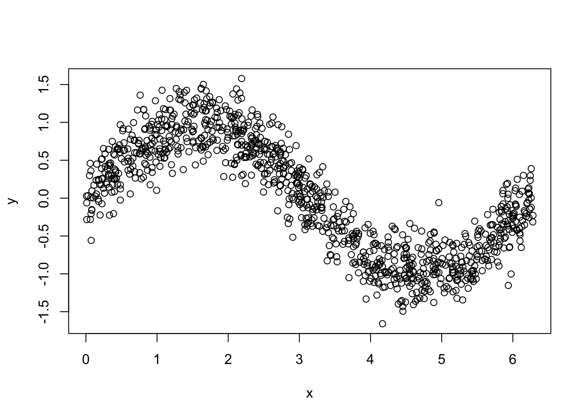
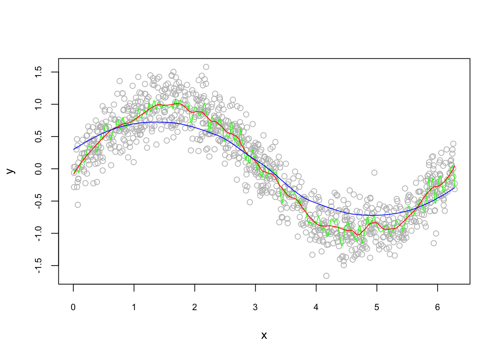
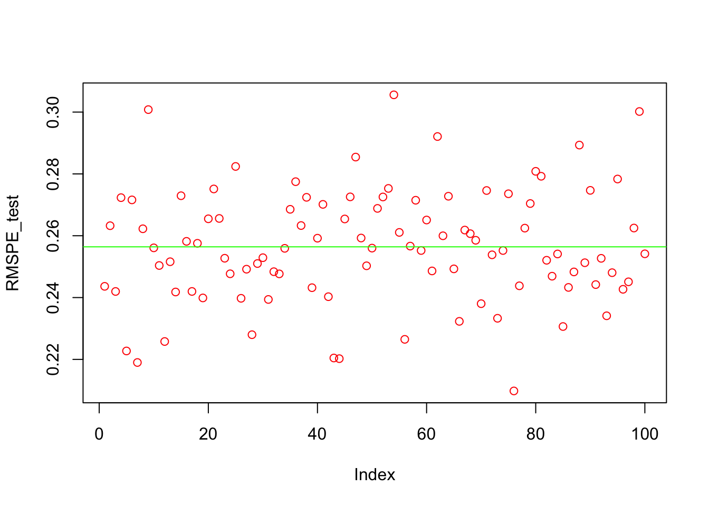

Chapter 11 Hyperparameter Tuning
How do we know that an estimated regression model is generalizable beyond the sample data used to fit it? Ideally, we can obtain new independent data with which to validate our model. For example, we could refit the model to the new dataset to see if the various characteristics of the model (e.g., estimates regression coefficients) are consistent with the model fit to the original dataset. Alternatively, we could use the regression equation of the model fit to the original dataset to make predictions of the response variable for the new dataset. Then we can calculate the prediction errors (differences between the actual response values and the predictions) and summarize the predictive ability of the model by the mean squared prediction error (MSPE). This gives an indication of how well the model will predict in the future. Sometimes the MSPE is rescaled to provide a cross-validation R2.
However, most of the time we cannot obtain new independent data to validate our model. An alternative is to partition the sample data into a training (or model-building) set, which we can use to develop the model, and a validation (or prediction) set, which is used to evaluate the predictive ability of the model. This is called cross-validation. Again, we can compare the model fit to the training set to the model refit to the validation set to assess consistency. Or we can calculate the MSPE for the validation set to assess the predictive ability of the model.
Another way to employ cross-validation is to use the validation set to help determine the final selected model. Suppose we have found a handful of “good” models that each provide a satisfactory fit to the training data and satisfy the model (LINE) conditions. We can calculate the MSPE for each model on the validation set. Our final selected model is the one with the smallest MSPE.
The simplest approach to cross-validation is to partition the sample observations randomly with 50% of the sample in each set. This assumes there is sufficient data to have 6-10 observations per potential predictor variable in the training set; if not, then the partition can be set to, say, 60%/40% or 70%/30%, to satisfy this constraint.
If the dataset is too small to satisfy this constraint even by adjusting the partition allocation then K-fold cross-validation can be used. This partitions the sample dataset into K parts which are (roughly) equal in size. For each part, we use the remaining K – 1 parts to estimate the model of interest (i.e., the training sample) and test the predictability of the model with the remaining part (i.e., the validation sample). We then calculate the sum of squared prediction errors, and combine the K estimates of prediction error to produce a K-fold cross-validation estimate.
When K = 2, this is a simple extension of the 50%/50% partition method described above. The advantage of this method is that it is usually preferable to residual diagnostic methods and takes not much longer to compute. However, its evaluation can have high variance since evaluation may depend on which data points end up in the training sample and which end up in the test sample.
When K = n, this is called leave-one-out cross-validation. That means that n separate data sets are trained on all of the data (except one point) and then prediction is made for that one point. The evaluation of this method is very good, but often computationally expensive. Note that the K-fold cross-validation estimate of prediction error is identical to the PRESS statistic.
In general, there are multiple tuning parameters or so-called hyperparameters associated with each prediction method. The value of the hyperparameter has to be set before the learning process begins because those tuning parameters are external to the model and their value cannot be estimated from data.
Therefore, we usually need to perform a grid search to identify the optimal combination of these parameters that minimizes the prediction error. For example, \(k\) in kNN, the number of hidden layers in Neural Networks, even the degree of of polynomials in a linear regression have to be tuned before the learning process starts. In contrast, a parameter (in a paramteric model) is an internal characteristic of the model and its value can be estimated from data for any given hyperparameter.
For example, \(\lambda\), the penalty parameter that shrinks the number of variables in Lasso, which we will see in Section 5, is a hyperparameter and has to be set before the estimation. When it’s set, the coefficients of Lasso are estimated from the process. We start with k-fold cross validation process and perform a cross-validated grid search to identify the optimal mix of those parameters.
Here, we will learn the rules and simple application how to set up a grid serach that evaluates many different combinations of hyperparameters. This chapter covers the key concept in modern machine learning applications and many learning algorithms.
11.1 Training and Validation
Before learning how to split the data into subsections randomly, we need to know what these sets are for and how we define them properly. This section is inspired by the article, What is the Difference Between Test and Validation Datasets?, by Jason Brownlee (Brownlee_2017?). The article clarifies how validation and test datasets are different, which can be confusing in practice.
Let’s define them formally first:
- Training Dataset: The sample of data used to fit (train) the predictive model.
- Validation Dataset: The sample of data used for tuning model hyperparameters, and selecting variables (feature selection).
- Test Dataset: The sample of data reserved to provide an unbiased evaluation of a final model fit on the training dataset.
However, in practice, validation and test datasets are not named separately. Let’s summarize a usual process in modern machine learning applications:
- You have a dataset for building a predictive model.
- Given the data and the prediction problem on your hand, you usually have multiple alternatives or competing models to start with.
- Each model needs a training, which is a process of tuning their hyperparameters and selecting their features (variables) for the best predictive performance.
Therefore, this process requires two different datasets: training and validation datasets. The intuition behind this split is very simple: the prediction is an out-of-sample problem. If we use the same sample that we use to fit the model for assessing the prediction accuracy of our model, we face the infamous overfitting problem. Since we usually don’t have another unseen dataset available to us, we split the data and leave one part out of our original dataset. We literally pretend that one that is left out is “unseen” by us. Now the question is how we do this split. Would it be 50-50?. The general approach is k-fold cross validation with a grid search. Here are the main steps:
- Suppose Model 1 requires to pick a value for \(\lambda\), perhaps it is a degree of polynomials in the model.
- We establish a grid, a set of sequential numbers, that is a set of possible values of \(\lambda\).
- We split the data into \(k\) random sections, let’s say 10 proportionally equal sections.
- We leave one section out and use 9 sections. The combination of these 9 sections is our training set. The one that is left out is our validation set.
- We fit the model using each value in the set of possible values of \(\lambda\). For example, if we have 100 values of \(\lambda\), we fit the model to the training set 100 times, once for each possible value of \(\lambda\).
- We evaluate each of 100 models by using their predictive accuracy on the validation set, the one that is left out. We pick a \(\lambda\) that gives the highest prediction accuracy.
- We do this process 10 times (if it is 10-fold cross validation) with each time using a different section of the data as the validation set. So, note that each time our training and validation sets are going to be different. At the end, in total we will have 10 best \(\lambda\)s.
- We pick the average or modal value of \(\lambda\) as our optimal hyperparameter that tunes our predictive model for its best performance.
Note that the term validation is sometimes is mixed-up with test for the dataset we left out from our sample. This point often confuses practitioners. So what is the test set?
We have now Model 1 tuned with the optimal \(\lambda\). This is Model 1 among several alternative models (there are more than 300 predictive models and growing in practice). Besides, the steps above we followed provides a limited answer whether if Model 1 has a good or “acceptable” prediction accuracy or not. In other words, tuning Model 1 doesn’t mean that it does a good or a bad job in prediction. How do we know and measure its performance in prediction?
Usually, if the outcome that we try to predict is quantitative variable, we use root mean squared prediction error (RMSPE). There are several other metrics we will see later. If it’s an indicator outcome, we have to apply some other methods, one of which is called as Receiver Operating Curve (ROC). We will see and learn all of them all in detail shortly. But, for now, let’s pretend that we know a metric that measures the prediction accuracy of Model 1 as well as other alternative models.
The only sensible way to do it would be to test the “tuned” model on a new dataset. In other words, you need to use the trained model on a real and new dataset and calculate the prediction accuracy of Model 1 by RMSPE or ROC. But, we do not have one. That’s why we have to go the beginning and create a split before starting the training process: training and test datasets. We use the training data for the feature selection and tuning the parameter. After you “trained” the model by validation, we can use the test set to see its performance.
Finally, you follow the same steps for other alternative learning algorithms and then pick the winner. Having trained each model using the training set, and chosen the best model using the validation set, the test set tells you how good your final choice of model is.
Here is a visualization of the split:
Before seeing every step with an application in this chapter, let’s have a more intuitive and simpler explanation about “training” a model. First, what’s learning? We can summarize it this way: observe the facts, do some generalizations, use these generalizations to predict previously unseen facts, evaluate your predictions, and adjust your generalizations (knowledge) for better predictions. It’s an infinite loop.
Here is the basic paradigm:
- Observe the facts (training data),
- Make generalizations (build prediction models),
- Adjust your prediction to make them better (train your model with validation data),
- Test your predictions on unseen data to see how they hold up (test data)
As the distinction between validation and test datasets is now clear, we can conclude that, even if we have the best possible predictive model given the training dataset, our generalization of the seen data for prediction of unseen facts would be fruitless in practice. In fact, we may learn nothing at the end of this process and remain unknowledgeable about the unseen facts. Why would this happen? The main reason would be the lack of enough information in training set. If we do not have enough data to make and test models that are applicable to real life, our predictions may not be valid. The second reason would be modeling inefficiencies in a sense that it requires a very large computing power and storage capacity. This subject is also getting more interesting everyday. The Google’s quantum computers are one of them.
11.2 Splitting the data randomly
We already know how to sample a set of observation by using sample(). We can use this function again to sort the data into k-fold sections. Here is an example with just 2 sections:
#We can create a simple dataset with X and Y using a DGM
set.seed(2)
n <- 10000
X <- rnorm(n, 3, 6)
Y <- 2 + 13*X + rnorm(n, 0, 1)
data <- data.frame(Y, X)
#We need to shuffle it
random <- sample(n, n, replace = FALSE)
data <- data[random, ]
#Now we have a dataset shuffled randomly.
#Since the order of data is now completely random,
#we can divide it as many slices as we wish
k <- 2 #2-fold (slices-sections)
nslice <- floor(n/k) #number of observations in each fold/slice
#Since we have only 2 slices of data
#we can call one slice as a "validation set" the other one as a "training set"
train <- data[1:nslice, ]
str(train)## 'data.frame': 5000 obs. of 2 variables:
## $ Y: num -92.7 52.35 -114 133.6 7.39 ...
## $ X: num -7.344 3.868 -9.006 9.978 0.468 ...## 'data.frame': 5000 obs. of 2 variables:
## $ Y: num -49.1 -53.7 -25 -46.2 135.2 ...
## $ X: num -3.9 -4.22 -1.99 -3.67 10.37 ...This is good, we now have it split into a 2-fold with 50-50% splitting. But what if we want a slicing that gives a 10% validation set and a 90% training set? How can we do that? One of the most common ways to do 10%-90% splitting is 10-fold slicing. Here is how:
#Again, first, we need to shuffle it
set.seed(2)
random <- sample(n, n, replace = FALSE)
data <- data[random, ]
#number of folds
k <- 10
nslice <- floor(n/k) #number of observations in each fold/slice
#Now we have 10 slices of data and each slice has 10% of data.
#We can call one slice as a "validation set"
#And we group the other 9 slices as a "training set"
val <- data[1:nslice, ]
str(val)## 'data.frame': 1000 obs. of 2 variables:
## $ Y: num -9.14 -87.79 -74.7 130.82 31.2 ...
## $ X: num -0.908 -6.95 -5.881 9.809 2.21 ...## 'data.frame': 9000 obs. of 2 variables:
## $ Y: num -71.6 12.1 27.9 136.1 26.3 ...
## $ X: num -5.59 0.83 1.98 10.37 1.92 ...How can we use this method to tune a model? Let’s use Kernel regressions applied by loess() that we have seen before.
#Let's simulate our data
n = 1000
set.seed(1)
x <- sort(runif(n)*2*pi)
y <- sin(x) + rnorm(n)/4
data2 <- data.frame(y, x)
plot(x, y)
#Estimation with degree = 2 (locally quadratic)
loe0 <- loess(y~x, degree=2, span = 0.02)
loe1 <- loess(y~x, degree=2, span = 0.1)
loe2 <- loess(y~x, degree=2, span = 1)
#Plots
t <- seq(min(x), max(x), length.out = 700)
fit0 <- predict(loe0, t)
fit1 <- predict(loe1, t)
fit2 <- predict(loe2, t)
plot(x, y, col = "gray", cex.main = 0.80, cex.axis = 0.75)
lines(t, fit0, col = "green")
lines(t, fit1, col = "red")
lines(t, fit2, col = "blue")
The sensitivity of kernel regression estimations (with the locally quadratic loess()) to the bandwidth (span) is obvious from the plot. Which bandwidth should we choose for the best prediction accuracy? There are actually 2 hyperparameters in loess(): degree and span. We can tune both of them at the same time, but for the sake of simplicity, let’s set the degree = 2 (locally polynomial) and tune only the bandwidth.
#Again, first, we need to shuffle it
set.seed(2)
random <- sample(n, n, replace = FALSE)
data2 <- data2[random, ]
#number of folds
k <- 10
nslice <- floor(n/k) #number of observations in each fold/slice
val <- data2[1:nslice, ]
train <- data2[(nslice+1):n, ]Our validation and train sets are ready. We are going to use the train set to train our models with different values of span in each one. Then, we will validate each model by looking at the RMSPE of the model results against our validation set. The winner will be the one with the lowest RMSPE. That’s the plan. Let’s use the set of span = 0.02, 0.1, and 1.
#Estimation with degree = 2 (locally quadratic) by training set
loe0 <- loess(y~x, degree=2, span = 0.02, data = train)
loe1 <- loess(y~x, degree=2, span = 0.1, data = train)
loe2 <- loess(y~x, degree=2, span = 1, data = train)
#Predicting by using validation set
fit0 <- predict(loe0, val$x)
fit1 <- predict(loe1, val$x)
fit2 <- predict(loe2, val$x)We must also create our performance metric, RMSPE;
#Estimation with degree = 2 (locally quadratic) by training set
rmspe0 <- sqrt(mean((val$y-fit0)^2))
rmspe1 <- sqrt(mean((val$y-fit1)^2))
rmspe2 <- sqrt(mean((val$y-fit2)^2))
c(paste("With span = 0.02", "rmspe is ", rmspe0),
paste("With span = 0.1", "rmspe is ", rmspe1),
paste("With span = 1", "rmspe is ", rmspe2))## [1] "With span = 0.02 rmspe is 0.2667567209162"
## [2] "With span = 0.1 rmspe is 0.247223047309939"
## [3] "With span = 1 rmspe is 0.309649140565879"We are now able to see which bandwidth is better. When we set span = 0.1, RMSPE is the lowest. But we have several problems with this algorithm. First, we only used three arbitrary values for span. If we use 0.11, for example, we don’t know if its RMSPE could be better or not. Second, we only see the differences across RMSPE’s by manually comparing them. If we had tested for a large set of span values, this would have been difficult. Third, we have used only one set of validation and training sets. If we do it multiple times, we may have different results and different rankings of the models. How are we going to address these issues?
Let’s address this last issue, about using more than one set of training and validation sets, first:
11.3 k-fold cross validation
We can start here with the following figure about k-fold cross-validation. It shows 5-fold cross validation. It splits the data into k-folds, then trains the data on k-1 folds and validation on the one fold that was left out. Although, this type cross validation is the most common one, there are also several different cross validation methods, such as leave-one-out (LOOCV), leave-one-group-out, and time-series cross validation methods, which we will see later.

This figure illustrates 5-k CV. We have done this with the 10-fold version for only one split and did not repeat it 10 times. The only job now is to create a loop that does the first slicing 10 times. If we repeat the same loess() example with 10-k cross validation, we will have 10 RMSPE’s for each span value. To evaluate which one is the lowest, we take the average of those 10 RSMPE’s for each model.
Before that, however, let’s start with a simple example of building a loop. Suppose we have a random variable \(X\) and we need to calculate means of \(X\) in training and validation sets to see if they are similar or not. A 10-k cross-validation example is here:
#data
n <- 10000
X <- rnorm(n, 2, 5)
#Shuffle the order of observations by their index
mysample <- sample(n, n, replace = FALSE)
#Since we will have 10 means from each set
#we need empty "containers" for those values
fold <- 10
means_validate <- c()
means_train <- c()
#Here is the loop
nvalidate <- round(n/fold) #number of observation in each set
for(i in 1:fold){
cat("K-fold loop: ", i, "\r") #This tells us which fold we are at the moment
#No need to have it as it slows the loop speed
if(i < fold) validate <- mysample[((i-1)*nvalidate+1):(i*nvalidate)]
else validate <- mysample[((i-1)*nvalidate+1):n]
train <- seq(1, n)[-validate]
X_validate <- X[validate]
X_train <- X[-validate]
means_validate[i] <- mean(X_validate)
means_train[i] <- mean(X_train)
}## K-fold loop: 1
K-fold loop: 2
K-fold loop: 3
K-fold loop: 4
K-fold loop: 5
K-fold loop: 6
K-fold loop: 7
K-fold loop: 8
K-fold loop: 9
K-fold loop: 10 ## [1] 1.960626 2.078920 1.844554 2.028020 2.223252 2.090933 2.082902 1.842147
## [9] 2.106923 2.184972## [1] 2.044325## [1] 2.053625 2.040481 2.066522 2.046137 2.024444 2.039146 2.040039 2.066789
## [9] 2.037370 2.028697## [1] 2.044325This is impressive. The only difference between this simple example and a more complex one is some adjustments that we need to make in the type of calculations. Let’s do it with our loess() example:
#Let's simulate our data
n = 10000
set.seed(1)
x <- sort(runif(n)*2*pi)
y <- sin(x) + rnorm(n)/4
data <- data.frame(y, x)
#Shuffle the order of observations by their index
mysample <- sample(n, n, replace = FALSE)
fold <- 10 #10-k CV
RMSPE <- c() # we need an empty container to store RMSPE from validate set
#loop
nvalidate <- round(n/fold)
for(i in 1:fold){
if(i < fold) validate <- mysample[((i-1)*nvalidate+1):(i*nvalidate)]
else validate <- mysample[((i-1)*nvalidate+1):n]
train <- seq(1, n)[-validate]
data_validate <- data[validate,]
data_train <- data[-validate,]
model <- loess(y ~ x, control=loess.control(surface="direct"),
degree=2, span = 0.1, data = data_train)
#loess.control() is used for the adjustment
#for x values that are outside of x values used in training
fit <- predict(model, data_validate$x)
RMSPE[i] <- sqrt(mean((data_validate$y-fit)^2))
}
RMSPE## [1] 0.2427814 0.2469909 0.2387873 0.2472059 0.2489808 0.2510570 0.2553914
## [8] 0.2517241 0.2521053 0.2429688## [1] 0.2477993How can we use this k-fold cross validation in tuning the parameters by 3 possible values of span = 0.02, 0.1, and 1:
#Using the same data
mysample <- sample(n, n, replace = FALSE)
fold <- 10 #10-k CV
#Possible values for span, GRID!
span <- c(0.02, 0.1, 1)
#We need a container to store RMSPE from validate set
#but we have to have a matrix now with 3 columns for each paramater in span
RMSPE <- matrix(0, nrow = fold, ncol = length(span))
#Loop
nvalidate <- round(n/fold)
for(i in 1:fold){
if(i < fold) validate <- mysample[((i-1)*nvalidate+1):(i*nvalidate)]
else validate <- mysample[((i-1)*nvalidate+1):n]
train <- seq(1, n)[-validate]
data_validate <- data[validate,]
data_train <- data[-validate,]
#We need another loop running each value in span:
for (j in 1:length(span)) {
#cat("K-fold loop: ", i, j, "\r")
model <- loess(y ~ x, control=loess.control(surface="direct"),
degree=2, span = span[j], data = data_train)
fit <- predict(model, data_validate$x)
RMSPE[i,j] <- sqrt(mean((data_validate$y-fit)^2))
}
}
RMSPE## [,1] [,2] [,3]
## [1,] 0.2553526 0.2537322 0.3221018
## [2,] 0.2498332 0.2490425 0.3136585
## [3,] 0.2457066 0.2438678 0.3156779
## [4,] 0.2537020 0.2515660 0.3124925
## [5,] 0.2541144 0.2506757 0.3135304
## [6,] 0.2462051 0.2438164 0.3139374
## [7,] 0.2589021 0.2571637 0.3147272
## [8,] 0.2453394 0.2435748 0.3145081
## [9,] 0.2479946 0.2461617 0.3002658
## [10,] 0.2399564 0.2393222 0.3006061## [1] 0.2497106 0.2478923 0.312150611.4 Grid Search
The traditional way of performing hyperparameter optimization has been grid search, or a parameter sweep, which is simply an exhaustive searching through a manually specified subset of the hyperparameter space of a learning algorithm. This is how grid search is defined by Wikipedia.
Although we did not call it as grid search, we have already done it in the last example. It was a simple search for optimal span with three arbitrary numbers, 0.02, 0.1 and 1. Besides, we didn’t search for degree, which is another hyperparamater in loess().
Hence the first job is to set the hyperparameter grid. In each hyperparameter, we need to know the maximum and the minimum values of this subset. For example, span in loess() sets the size of the neighborhood, which ranges between 0 to 1. This controls the degree of smoothing. So, the greater the value of span, smoother the fitted curve is. For example, if \(n\) is the number of data points and span = 0.5, then for a given \(X\), loess will use the 0.5 * \(n\) closest points to \(X\) for the fit.
Additionally the degree argument in loess() is defined as the degree of the polynomials to be used, normally 1 or 2. (Degree 0 is also allowed, but see the ‘Note’. in ?loess). For each learning algorithm, the number of tuning parameters and their ranges will be different. Before running any grid search, therefore, we need to understand their function and range.
Let’s use our example again without cross validation first:
#Using the same data with reduced size
n = 1000
set.seed(1)
x <- sort(runif(n)*2*pi)
y <- sin(x) + rnorm(n)/4
data <- data.frame(y, x)
#Creating a set of possible values for span: GRID
span <- seq(from = 0.01, to = 1, by = 0.02) #this creates 50 options
degree <- c(1,2)
#We need a (span x degree) matrix to store RMSPE
RMSPE <- matrix(0, nrow = length(span), ncol = length(degree))
#loop for grid search over span
for(i in 1:length(span)){
#loop for grid search for degree
for (j in 1:length(degree)) {
#cat("Loops: ", i, j, "\r")
model <- loess(y ~ x, control=loess.control(surface="direct"),
degree=degree[j], span = span[i], data = data)
fit <- predict(model, data$x)
RMSPE[i,j] <- sqrt(mean((data$y-fit)^2))
}
}The RMSPE matrix is a \(50 \times 2\) matrix. Each row gives us RMSPE calculated for each span parameter for 2 different degree parameters. Note that this is not a correct RSMPE as it uses only one sample and calculates in-sample RMSPE. Moreover, it is not efficient way to search a grid as it uses double loops. We will improve it step by step.
Now our job is to find the smallest RMSPE in the matrix.
## [,1] [,2]
## [1,] 0.2241721 0.2019041
## [2,] 0.2466408 0.2413781
## [3,] 0.2512451 0.2465098
## [4,] 0.2538281 0.2496574
## [5,] 0.2551257 0.2523178
## [6,] 0.2557593 0.2534789## row col
## [1,] 1 2We will the same method in tuning our model, loess(), with cross validation
11.5 Cross-validated grid search
All we need to do is to put our grid search algorithm inside the cross-validation loop. We will improve two things: we will have a “better” grid so that the number of loops will be fewer. Here is an example:
#Creating a set of possible values for span: GRID
grid <- expand.grid(seq(from = 0.01, to = 1, by = 0.02), c(1,2))
head(grid)## Var1 Var2
## 1 0.01 1
## 2 0.03 1
## 3 0.05 1
## 4 0.07 1
## 5 0.09 1
## 6 0.11 1#or
span <- seq(from = 0.01, to = 1, by = 0.02)
degree <- c(rep(1,length(span)), rep(2,length(span)))
grid_mine <- cbind(span, degree)
head(grid)## Var1 Var2
## 1 0.01 1
## 2 0.03 1
## 3 0.05 1
## 4 0.07 1
## 5 0.09 1
## 6 0.11 1Now we need to go through each row of grid that contains two tuning parameters in each CV: the first column is span and the second column is degree.
#Using the same data with reduced size
n = 1000
set.seed(1)
x <- sort(runif(n)*2*pi)
y <- sin(x) + rnorm(n)/4
data <- data.frame(y, x)
#Setting CV
mysample <- sample(n, n, replace = FALSE)
fold <- 10 #10-fold CV
#Since we will do the same tuning 10 times
#we need to have a container that stores
#10 optimal sets of span and degree values
OPT <- c()
#loop
nvalidate <- round(n/fold)
for(i in 1:fold){
#cat("K-fold loop: ", i, "\r")
if(i < fold) validate <- mysample[((i-1)*nvalidate+1):(i*nvalidate)]
else validate <- mysample[((i-1)*nvalidate+1):n]
train <- seq(1, n)[-validate]
data_validate <- data[validate,]
data_train <- data[-validate,]
#we need a vector to store RMSPE of each row in the grid
RMSPE <- c()
#we need to have another loop running each row in grid:
for(s in 1:nrow(grid)){
model <- loess(y ~ x, control=loess.control(surface="direct"),
degree=grid[s,2], span = grid[s,1], data = data_train)
fit <- predict(model, data_validate$x)
RMSPE[s] <- sqrt(mean((data_validate$y-fit)^2))
}
OPT[i] <- which(RMSPE == min(RMSPE), arr.ind = TRUE)
}
opgrid <- grid[OPT,]
colnames(opgrid) <- c("span", "degree")
rownames(opgrid) <- c(1:10)
opgrid## span degree
## 1 0.09 2
## 2 0.63 2
## 3 0.23 2
## 4 0.03 2
## 5 0.33 2
## 6 0.59 2
## 7 0.75 2
## 8 0.57 2
## 9 0.25 1
## 10 0.21 1These results are good but how are we going to pick one set, the coordinates of the optimal span and degree? It seems that most folds agree that we should use degree = 2, but which span value is the optimal? If the hyperparameter is a discrete value, we can use majority rule with the modal value, which is just the highest number of occurrences in the set. This would be appropriate for degree but not for span. Instead, we should use the mean of all 10 optimal span values, each of which is calculated from each fold.
## [1] 2## [1] 0.368Now, the last job is to use them in predictions to see how good they are. Remember, we used the whole sample to tune our hyperparameters. At the outset, we said that this type of application should be avoided. Therefore, we need to create a test set at the beginning and put that subset a side, and use only the remaining data to tune our hyperparameters. Here is an illustration about this process:

Let’s do it:
# Using the same data
n = 1000
set.seed(1)
x <- sort(runif(n)*2*pi)
y <- sin(x) + rnorm(n)/4
data <- data.frame(y, x)
# Creating a set of possible values for span: GRID
grid <- expand.grid(seq(from = 0.01, to = 1, by = 0.02), c(1,2))
# Train - Test Split
set.seed(321)
shuf <- sample(nrow(data), nrow(data), replace = FALSE)
k <- 10
indx <- shuf[1:(nrow(data)/k)]
testset <- data[indx, ] #10% of data set a side
trainset <- data[-indx,]
# k-CV, which is the same as before
set.seed(123)
mysample <- sample(nrow(trainset), nrow(trainset), replace = FALSE)
fold <- 10
OPT <- c()
# CV loop
nvalid <- round(nrow(trainset)/fold)
for(i in 1:fold){
if(i < fold) valid <- mysample[((i-1)*nvalid+1):(i*nvalid)] # Simpler version
data_valid <- trainset[valid, ]
data_train <- trainset[-valid, ]
RMSPE <- c()
for(s in 1:nrow(grid)){
model <- loess(y ~ x, control=loess.control(surface="direct"),
degree=grid[s,2], span = grid[s,1], data = data_train)
fit <- predict(model, data_valid$x)
RMSPE[s] <- sqrt(mean((data_valid$y-fit)^2))
}
OPT[i] <- which(RMSPE == min(RMSPE))
}
# Hyperparameters
opgrid <- grid[OPT,]
colnames(opgrid) <- c("span", "degree")
rownames(opgrid) <- c(1:10)
opt_degree <- modal(opgrid[,2])
opt_degree## [1] 2## [1] 0.23# **** Using the test set for final evaluation ******
model <- loess(y ~ x, control=loess.control(surface="direct"),
degree=opt_degree, span = opt_span, data = trainset)
fit <- predict(model, testset$x)
RMSPE_test <- sqrt(mean((testset$y-fit)^2))
RMSPE_test## [1] 0.2527365What we have built is an algorithm that learns by trial-and-error. However, we need one more step to finalize this process: instead of doing only one 90%-10% train split, we need to do it multiple times and use the average RMSPE_test and the uncertainty (its variation) associated with it as our final performance metrics. Here again:
#Using the same data
n = 1000
set.seed(1)
x <- sort(runif(n)*2*pi)
y <- sin(x) + rnorm(n)/4
data <- data.frame(y, x)
#Creating a set of possible values for span: GRID
grid <- expand.grid(seq(from = 0.01, to = 1, by = 0.02), c(1,2))
# loop for Train - Test split 100 times
t = 100 # number of times we loop
RMSPE_test <- c() # container for 100 RMSPE's
for (l in 1:t) {
set.seed(10+l)
shuf <- sample(nrow(data), nrow(data), replace = FALSE)
k <- 10
indx <- shuf[1:(nrow(data)/k)]
testset <- data[indx, ] #10% of data set a side
trainset <- data[-indx,]
# k-CV, which is the same as before
set.seed(5*l)
mysample <- sample(nrow(trainset), nrow(trainset), replace = FALSE)
fold <- 10
OPT <- c()
#CV loop
nvalid <- round(nrow(trainset)/fold)
for(i in 1:fold){
if(i < fold) valid <- mysample[((i-1)*nvalid+1):(i*nvalid)]
data_valid <- trainset[valid, ]
data_train <- trainset[-valid, ]
RMSPE <- c()
for(s in 1:nrow(grid)){
model <- loess(y ~ x, control=loess.control(surface="direct"),
degree=grid[s,2], span = grid[s,1], data = data_train)
fit <- predict(model, data_valid$x)
RMSPE[s] <- sqrt(mean((data_valid$y-fit)^2))
}
OPT[i] <- which(RMSPE == min(RMSPE))
}
# Hyperparameters
opgrid <- grid[OPT,]
colnames(opgrid) <- c("span", "degree")
rownames(opgrid) <- c(1:10)
opt_degree <- modal(opgrid[,2])
opt_span <- mean(opgrid[,1])
# **** Using the test set for final evaluation ******
model <- loess(y ~ x, control=loess.control(surface="direct"),
degree=opt_degree, span = opt_span, data = trainset)
fit <- predict(model, testset$x)
RMSPE_test[l] <- sqrt(mean((testset$y-fit)^2))
} We can now see the average RMSPE and its variance:

## [1] 0.2564112## [1] 0.0003384585